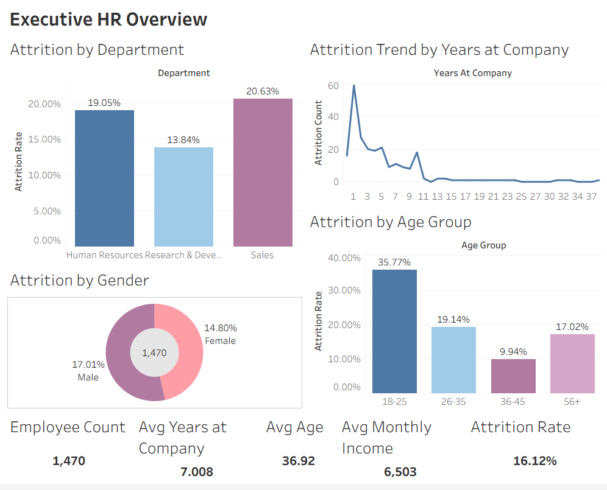
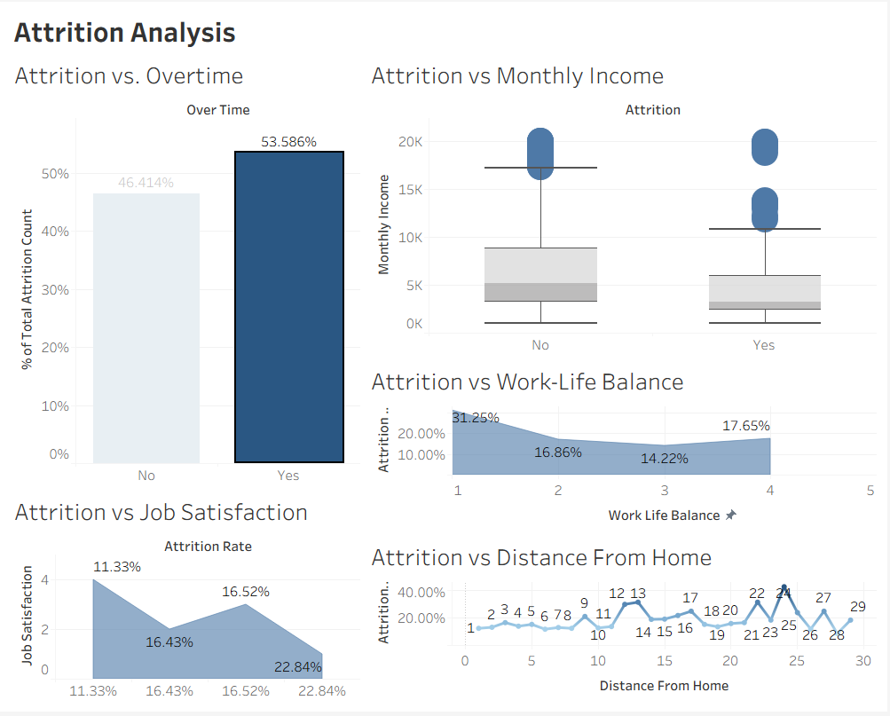
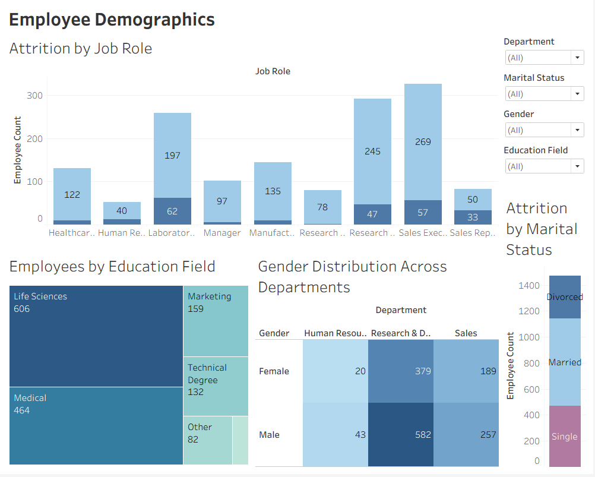

← Back to Home
1. The Business Question
What are the key drivers of employee attrition, and how can the organization use data-driven insights to improve retention and workplace satisfaction?
2. Data Collection & Methodology
- Data Source: Extracted records for 1,470 employees from Kaggle.
- Data Cleaning (Python/Pandas): Resolved missing values, standardized date formats, and categorized numerical data to ensure accurate visual mapping.
- Database Integration (SQL): Loaded the cleaned dataset into a structured SQLite database to allow for rapid querying of monthly aggregates and demographic cuts.
3. Dashboard & Detailed Findings
I connected Tableau to the database to create interactive dashboards. This allowed the organization to measure overall employee attrition rates and discover underlying workforce trends influencing retention.
Executive HR Overview & Demographics

High-level KPIs outlining total workforce metrics, age groups, and departmental attrition.
- Total Workforce & Averages: The organization has a total of 1,470 employees. The average employee age is 36.92, with an average monthly income of 6,503, and an average tenure of 7.008 years.
- Overall Attrition: The baseline company attrition rate sits at 16.12%.
- Age: The youngest age group (18-25) is significantly more likely to leave, exhibiting a massive 35.77% attrition rate. This is more than double the attrition rate of the next highest group (26-35 at 19.14%), while the 36-45 age group is the most stable with only a 9.94% attrition rate.
- Gender: Male employees have a slightly higher attrition rate (17.01%) compared to female employees (14.80%).
- Tenure: Employees are at the highest flight risk during their first year. The trend chart highlights a massive spike at 1 year, peaking at roughly 60 departing employees, before dropping sharply.
Work Environment & Compensation Factors

Analysis of environmental drivers including overtime, distance from home, and job satisfaction.
- Overtime Impact: Working overtime is a major indicator of turnover. Employees working overtime account for 53.58% of the total attrition count, compared to 46.41% for those not working overtime.
- Work-Life Balance: Employees rating their work-life balance as a "1" (the lowest score) have a severe attrition rate of 31.25%.
- Job Satisfaction: Low job satisfaction directly correlates with turnover. Employees who rated their job satisfaction at a "1" have a 22.84% attrition rate, whereas those with a "4" (highest satisfaction) drop to an 11.33% attrition rate.
- Income Disparity: Box plot analysis indicates that employees who leave the company generally have a noticeably lower median monthly income (falling in the ~3K-4K range) compared to those who stay (median income ~5K).
- Commute Distance: Attrition rates trend upward for employees with longer commutes, frequently spiking above 30% for those living 12, 13, 22, and 24 miles away from the office.
Department & Role Specifics

Breakdown of job roles, educational fields, and cross-departmental gender distribution.
- Departmental Risk: The Sales department suffers the highest attrition rate at 20.63%, followed closely by Human Resources Research & Development at 19.05%.
- High-Volume Turnover Roles: Looking at absolute numbers by job role, Laboratory Technicians (62 departures), Sales Executives (57 departures), and Research Scientists (47 departures) represent the highest raw counts of attrition.
- Educational Background: The workforce is heavily concentrated in Life Sciences (606 employees) and Medical (464 employees) fields.
4. Key Recommendations & Actionable Outcomes
- Burnout & Workload Correlation: Address the high turnover (53.58%) among employees working overtime by restructuring workload and reducing mandatory extended hours.
- Career Progression Gap: Data reveals that turnover peaks among early-career employees and those facing limited promotion opportunities. Recommendation: Implement structured mentorship and clear advancement pathways during the first 1-2 years of employment.
- Environmental & Departmental Factors: Certain departments experience consistently higher turnover, with longer commuting distances acting as a secondary driver. Recommendation: Offer flexible, remote, or hybrid schedules for distant commuters to improve work-life balance scores.
- Actionable Outcome: By executing these targeted adjustments based on tenure and workload, HR leadership can proactively mitigate major turnover risks and reduce hiring costs.